Gesture Controlled Wall Climbing Robot
Abstract
The aim of the project is to develop a wall climbing robot using Arduino board based on ATMega328 processor that is capable of traversing along the floor, walls and ceiling with the help of suction created by a brushless DC motor. The robot is controlled using gesture control techniques implemented using a secondary microprocessor. It finds various applications in urban environments such as inspection of high-rise buildings and hazardous industrial environment, reconnaissance and surveillance & cleaning.
1. Introduction
1.1 Wall Climbing Robot
An increasing interest in the development of special climbing robots has been witnessed in last decade. Motivations are typically to increase the operation efficiency in dangerous environments or difficult-to-access places, and to protect human health and safety in hazardous tasks. Climbing robots with the ability to maneuver on vertical surfaces are currently being strongly requested by various industries and military authorities in order to perform dangerous operations such as inspection of high-rise buildings, spray painting and sand blasting of gas tanks, maintenance of nuclear facilities, aircraft inspection, surveillance and reconnaissance, assistance in fire fighting and rescue operations, etc. Such capabilities of climbing robots would not only allow them to replace human workers in those dangerous duties but also eliminate costly scaffolding.
The adhesion device for robot is based on the aerodynamic attraction produced by a rotating rotor which generates a low pressure zone enclosed by a chamber. The duct fan arrangement using the suction motor enables this purpose.
1.2 Gesture Control
The method of gesture control is used for controlling the robot. In many application of controlling robotic gadgets, it becomes quite hard and complicated when there comes the part of controlling it with remote or many different switches. Mostly in military application, industrial robotics, construction vehicles in civil side, medical application for surgery. In this field it is quite complicated to control the robot or particular machine with remote or switches, sometime the operator may get confused in the switches and button itself, so a different concept is implemented where the robot is controlled with the movement of hand which will control the movement of robot.
2. Architecture
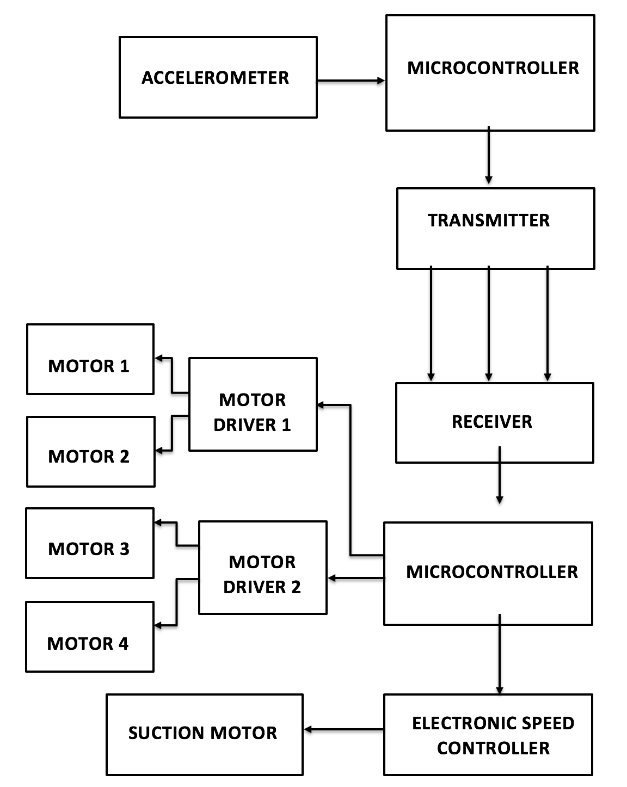Figure 1: Block Diagram
The robot is divided into three main areas; the adhesion mechanism, the drive system and the transition system. The adhesion mechanism is the most critical of these as it allows the robot to adhere to the surface on which it climbs. We use a suction motor for creating the suction force. Metal gear motors are used for the linear motion and transition. The motor drivers are used for controlling and driving the gear motors. The drive system is designed to transmit power to four wheels of the robot and to provide maximum traction as it climbs.
The model incorporates two separate microcontroller units for the transmitter and receiver sections. The microcontroller unit that is part of the transmitter section is interfaced with an accelerometer and a transmitter. The accelerometer detects the coordinates corresponding to the gesture and this is read by the microcontroller and then it is encoded and transmitted via the RF transmitter module. The receiver unit, which is located on the robot, receives the instruction and a separate microcontroller decodes this signal and sends the corresponding signals to the motor drivers and electronic speed controller(ESC). The ESC rotates the suction motor corresponding to the PWM (pulse width modulated) signal from the microcontroller. The motor drivers are interfaced to the microcontrollers via digital and each driver controls two micro metal gear motors, which enable the linear motion.
3. Adhesion Mechanism
The wall climbing robot uses a vacuum rotor package that generates a low pressure zone enclosed by a flexible vacuum chamber to adhere to a variety of surfaces. This adhesion mechanism is based on aerodynamic attraction and works in many ways like a hovercraft lift system in reverse.
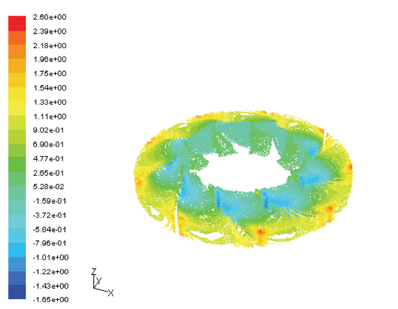Figure 2(a): Aerodynamic Simulation I
Figure shows the pressure distribution inside the chamber when the motor rotates at a constant speed. It indicates that the most low- pressure region (shown in blue) is at the entrance of the curved region of the impeller which caused by the rotational flow due to the rotation velocity of the rotor. This low pressure sucks the air from the inlet and pushes it to the outlet. This has been reflected by the high- pressure region at the most outer boundary area of the rotor (shown as orange to red regions). As shown in Figure 2(a), the velocity is low at the entrance and it is high at the outlet, which corresponds with the pressures at these locations. It reveals that the rotor package can generate negative pressure around the axial, and the higher the rotation speed, the lower pressure it can create inside the rotor cylinder. Note that total pressure is the sum of the static and dynamic pressure of air.
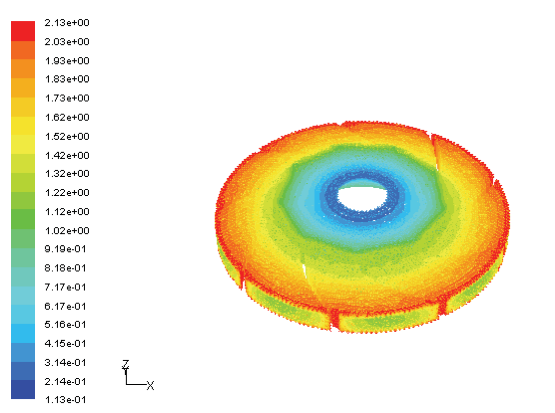Figure 2(b): Aerodynamic Simulation II
As shown in Figure 2(b), the velocity is low at the entrance and it is high at the outlet, which corresponds with the pressures at these locations. It reveals that the rotor package can generate negative pressure around the axial, and the higher the rotation speed, the lower pressure it can create inside the rotor cylinder. Note that total pressure is the sum of the static and dynamic pressure of air.
Figure 3: Freebody Diagram on Ceiling
When the robot is traversing along the ceiling the suction created by the motor should be large enough to overcome the weight and neutral reaction at the point of contact (Figure 3.
3.1 Suction Motor
Figure 4: Suction Motor
The motor used to generate suction is a brushless DC motor(BLDC) as shown in figure 4. The main advantages of brushless dc motor are its high RPM and high efficiency compared to brushed dc motor. The stator windings of the suction motor are connected to the integrated switching circuit of the Electronic Speed Controller (ESC). The control circuit energizes the windings at proper time in the required pattern at required time and the rotor aligns with the energized stator winding. Thus it provides the required RPM. Torque is at its maximum when the rotor starts to move, but it reduces as the two fields align to each other. Thus, to preserve the torque or to build up the rotation, the magnetic field generated by stator should keep switching. To catch up with the field generated by the stator, the rotor will keep rotating. Since the magnetic field of the stator and rotor both rotate at the same frequency, they come under the category of synchronous motor.
3.2 Electronic Speed Controller (ESC)
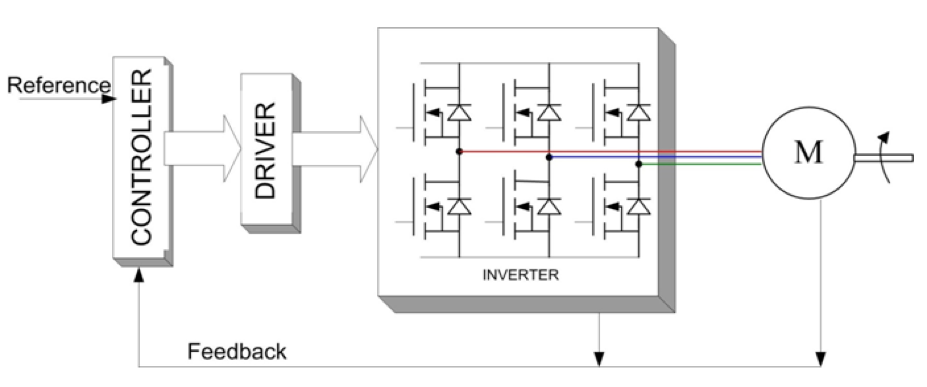Figure 5: Suction Motor Control Loop
The suction motor is controlled using an electronic speed controller that feature ATmega MCU with customizable firmware. The unit receives input PWM signal from the controller unit and the ESC uses this proportional signal from the controller to determine how much power is to be send to the motor to maintain its speed (Figure 5). The power is supplied to the ESC from high discharge LiPo batteries. The rating of the ESC is decided based on the current requirement of the suction motor. The ESC also provides the power required by the driver motors and microcontroller via the batter eliminatory circuit (BEC). BEC reduces the input voltage to 5V by switching at 8kHz.
The correct phase varies with the motor rotation, which is to be taken into account by the ESC: Usually, back EMF from the motor is used to detect this rotation, but variations exist that use magnetic or optical detectors. Reversing the motor's direction may also be accomplished by switching any two of the three leads from the ESC to the motor.
4. Drive System
The design of the drive system has proven to be surprisingly critical to the performance of the wall climbing robot. While climbing a wall, the adhesion mechanism provides a pressure differential which pushes the robot against the wall. A normal force at each wheel is created in reaction to the suction force created by the pressure differential (Figure 6).
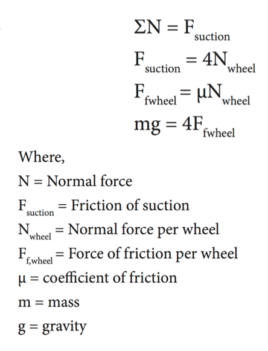Figure 6: Free Body Diagram on Wall
To counter the force of gravity the static friction of the wheels must be considered. In the two-wheel drive case, half of the normal force is distributed across the driven wheels. For four-wheel drive the normal force is applied fully to the driven wheels.
The static or rolling coefficient of friction is specific to the particular wheel and wall combination. The physics of the system shows that four-wheel drive is superior to two-wheel drive for providing maximum traction. Due to the need to provide four-wheel drive and concerns about the additional weight of adding motors, micro metal gear motors were used. The motors used in the drive system needs to be capable of providing power reliably to the front and back wheels of each side of the robot.
4.1 Driver Motor
Figure 7: Driver motor (Side)
The gear motor used is a miniature high-power brushed DC motor with a 248.98:1 metal gearbox (Figure 7). The maximum torque rating of the motor increases as the gear ratio increases and the speed of the motor decreases as the gear ratio decreases. Thus the maximum torque rating of the motor is inversely proportional to the speed of motor. As the torque demand on the motor increases it draws higher current from the batteries (Figure 8). The motor weights only 10g and can produce a maximum torque of 4.3 kg-cm at 1.6A. It has a cross section of 10 × 12 mm, and the D-shaped gearbox output shaft is 9 mm long and 3 mm in diameter.
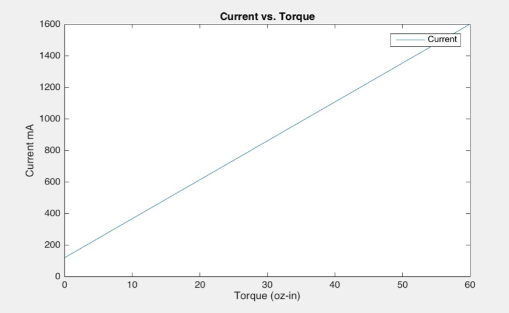Figure 8: Torque-Current characteristics of driver motor
Micro Metal gear motor gear motors are intended for use at 6 V, though in general, these motors can run at voltages above and below this nominal voltage, so it can operate in the 3 – 9 V range. Lower voltages might not be practical, and higher voltages could start negatively affecting the life of the motor.
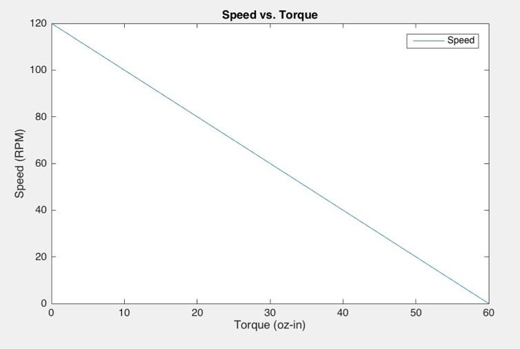Figure 9: Speed-Torque characteristics of driver motor
The graph above (Figure 9) shows the plot of torque vs speed of the driver motor. And it can have been seen that the speed is inversely proportional to the torque.
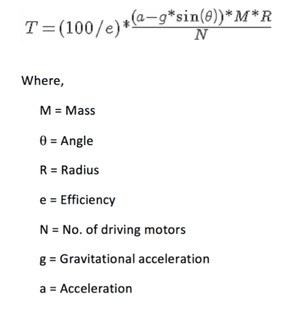The equation has been used to calculate the to operating torque of the motors and the corresponding current drawn by the motors are determined from the motor characteristics for proper selection of the current ratings of the motor drivers.
5. Transition System
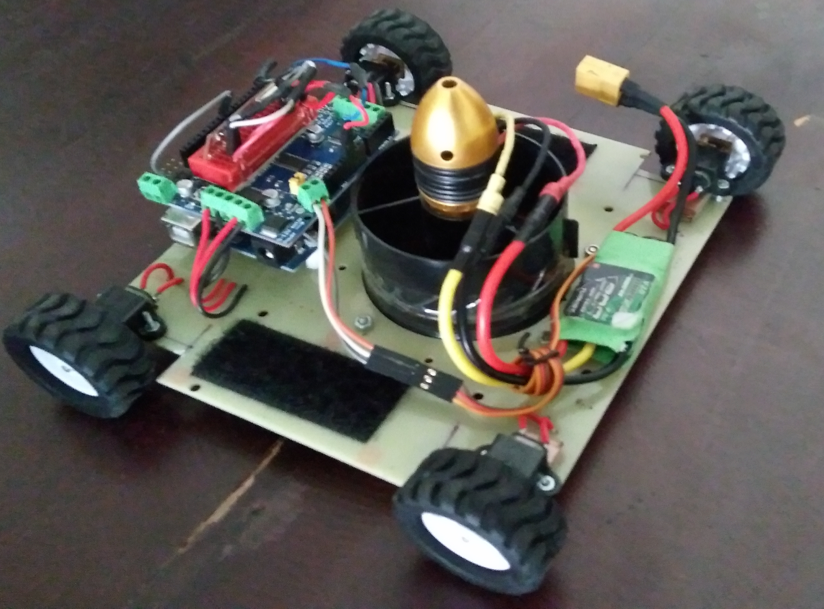Figure 10: Wall Climbing Robot
The transition system of the wall climbing robot is designed to allow the robot to move quickly from ground to a wall. The ground-to-wall transition can be easily accomplished without any component outside of the structure frame. The transition mechanism was redesigned and wider wheel driving system was adoption to increase the contact friction and avoid wheel slippage while climbing vertical walls. The wheels were placed partially inside by providing an area in the chassis to decrease the amount of force acting on the wheels during transition.
6. Battery
Lithium polymer batteries are used to power as they can supply the high current required by the suction motor, they are very light due to its high energy density and they can be connected in different configurations as per our requirements.
7. Control System
Figure 11: Atmega328
Good mechanical structure cannot guarantee excellent performance. It is crucial to design an effective control system to fully realize the potential of the wall climbing robot and empower it with intelligence superior to other robots. Resource-constrained miniature robots such as the wall climbing robots require small but high-performance onboard processing unit to minimize weight and power consumption for prolonged operation. The Atmega328 is an ideal candidate for an embedded controller because of its high-speed performance, its support for multi-motor control, low power consumption and ease of programming.
7.1 Motor Driver
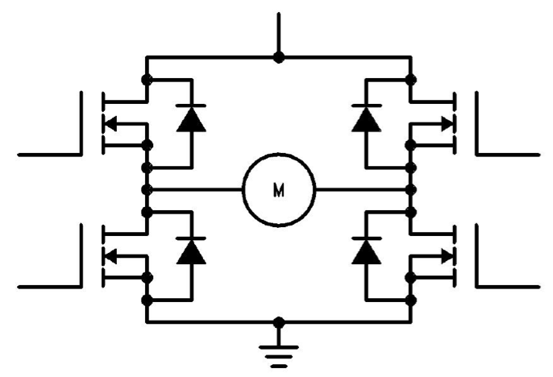Figure 12: H-Bridge
MOSFET based motor driver (Figure 12) have higher current carrying capacity compared to BJT based motor drivers. One motor driver needs 2 digital pins for the direction of rotation and a PWM pin for deciding the speed of the motor. An H-Bridge consist of 2 N-Type MOSFET and 2 P-Type MOSFET. During operation one N-Type and one P-Type MOSFET will be conducting. H-Bridge also rotates the motor in both directions as shown in Figure 13(a) & 13(b).
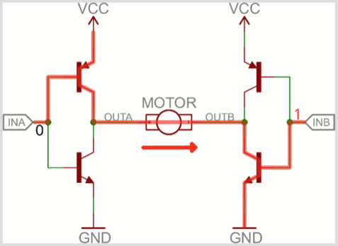 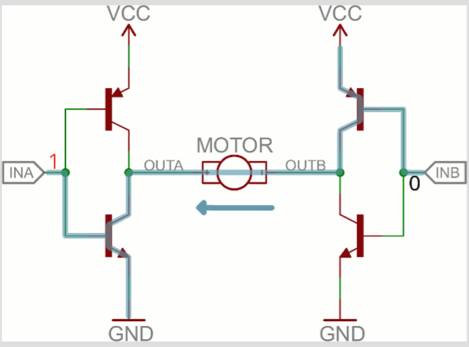Figure 13(a): Forward Rotation
Figure 13(b): Backward Rotation
7.2 Communication Protocol
I2C communication protocol (Figure 14) is used to communicate between the microcontroller and the motor drivers. The drivers use I2C 7-bit addresses between 0x60-0x80. Using I2C only two pins SDA and SCL are required to control multiple motor drivers, and since it's I2C you can also connect any other I2C devices or shields to the same pins. Also a fully-dedicated PWM driver chip is used to handle all the motor and speed controls over I2C.
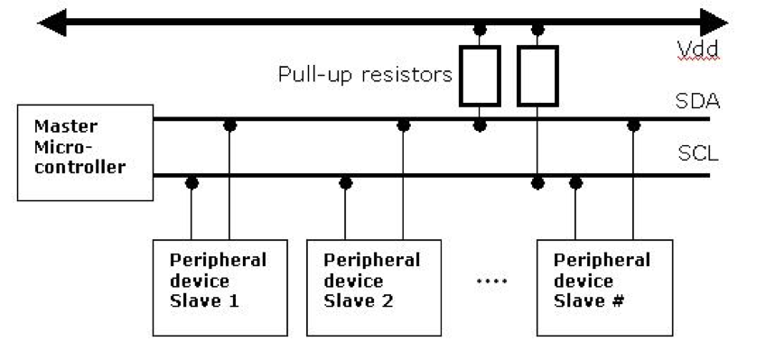Figure 14: I2C Communication
As a self-contained system, the wall climbing robot carries its own power source, sensors, control system and associated hardware. To minimize weight and complexity, each wall climbing robot module uses four drive motors, two battery units, one suction motor and control unit. An accelerometer is installed for monitoring the orientation of the robot and forms a feedback loop to adjust the speed of suction motor.
8 Gesture Control
The robot has been controlled using the movements of hands. All the different motions of the robot and the suction motor have been integrated into gesture control. The gestures of hands are encoded using microcontroller and transmitted to the robot where it is encoded and corresponding signals are generated.
9. Accelerometer
The ADXL335 is a small, thin, low power, complete 3-axis accelerometer with signal conditioned voltage outputs. It measures acceleration with a minimum full-scale range of ±3 g. It measures the static acceleration of gravity by tilting the device with respect to the earth, as well as dynamic acceleration resulting from motion, shock, or vibration. The output is obtained is as Xout, Yout, and Zout.
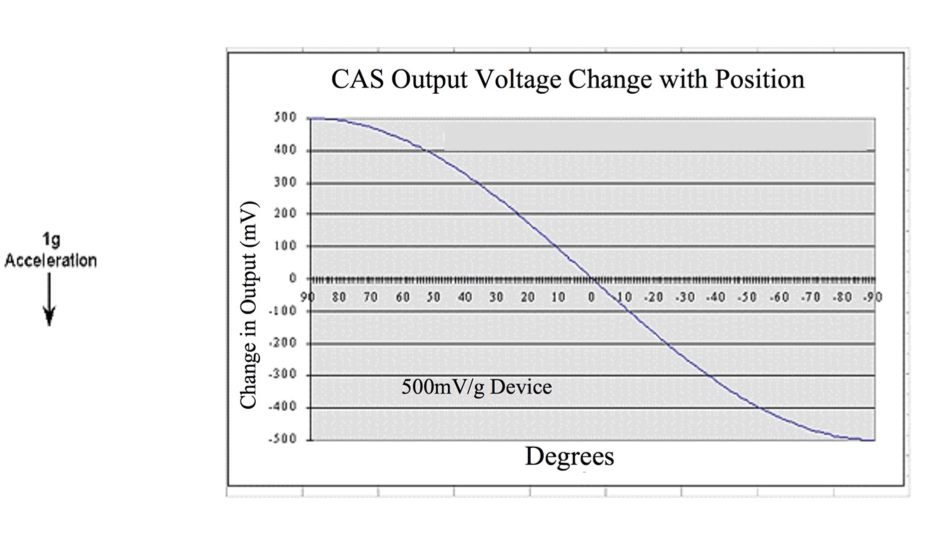Figure 15: Effect of Tilt on DC Accelerometer
The accelerometer senses the relative motion (static acceleration) of the hand along the three co-ordinate axes - X, Y & Z and moves the robot accordingly. We have used X & Y axes for linear movement and the Z axis for turning the suction on and off. The movements are encoded using the controller and sent to the receiver located on the robot via an RF transmitter.
10. Transmission
10.1 RF Transmitter & Receiver
We have made use of radio frequency communication to communicate between the gesture control unit and the robot. The RF module operates at Radio Frequency. The RF module comprises of an RF Transmitter and an RF Receiver. The data is sent serially from the transmitter which is received by the tuned receiver. The transmitter/receiver (Tx/Rx) pair operates at a frequency of 434 MHz. An RF transmitter receives serial data and transmits it wirelessly through RF through its antenna. The transmitted data is received by an RF receiver operating at the same frequency as that of the transmitter. It can be used with a pair of encoder/decoder or a separate ATMega 328 processor for encoding the data and the one on the robot to decode the data.
Transmitter working voltage 3-12 volts, working current < 40mA
Receiver working voltage 5V DC, working current < 5.5mA
Transmission through RF is better than IR (infrared) because of many reasons. Firstly, signals through RF can travel through larger distances making it suitable for long range applications. Also, while IR mostly operates in line-of-sight mode, RF signals can travel even when there is an obstruction between transmitter & receiver. RF transmission is more strong and reliable than IR transmission and Radio Frequency signals can travel longer distances than Infrared.
RF communication uses a specific frequency unlike IR signals which are affected by other IR emitting sources. Thus for many applications the medium of choice is RF. RF communications incorporate a transmitter and or receiver.
10.2 Factors Affecting RF Module’s Performance:
As compared to the other radio-frequency devices, the performance of an RF module will depend on several factors like by increasing the transmitter’s power a large communication distance will be gathered. However, which will result in high electrical power drain on the transmitter device, which causes shorter operating life of the battery powered devices. Also by using this device at higher transmitted power will create interference with other RF devices.
11 Conclusion & Future Work
The wall climbing robot has shown to be successful at many tasks that have not previously been possible for mobile robots. It is notable among wall climbing robots for its large payload, and versatile mobility on both smooth and rough surfaces. Future work is to optimize the adhesion mechanism and further improve the performance of the wall climbing robot and apply it to building inspection tasks.
12 Bibliography
[1] Jizhong Xiao, William Morris, Narashiman Chakravarthy, Angel Calle, “City-climber: a New Generation of Mobile Robots with Wall-climbing Capability,” Proc. of SPIE Vol. 6230, 62301B, 2006 SPIE Defense & Security Symposium, 17-21 April 2006, Orlando, Florida, USA.
[2] Matthew Elliot, William Morris, Jizhong Xiao, “City-Climber, a new generation of wall- climbing robots,” in: Video Proceedings of 2006 IEEE International Conference on Robotics and Automation, May 15-19, 2006, Orlando, USA.
[3] Jizhong Xiao, Hans Dulimarta, Zenyu Yu, Ning Xi, R. Lal Tummala, “Controller Design for an Autonomous Wall-climbing Micro-robot Based on TI 320LF2407 DSP Chip,” in: Digital Control Systems Applications Symposia, DSPSFEST’2000, Houston, Texas, August 2-4, 2000.
[4] SwarnaPrabha Jena, Sworaj Kumar Nayak, Saroj Kumar Sahoo, Sibu Ranjan Sahoo, Saraswata Dash, Sunil Kumar Sahoo, “Accelerometer based gesture control using Arduino” - Electronics and Communication Engineering, Centurion University of Technology and Management, India- International Journal of Engineering Sciences and Research Technology.